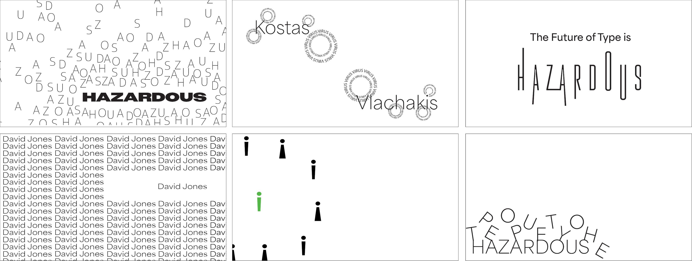

For this project, I created a typographic motion piece for our Graphic Design 3 class. The Type Festival is bringing attention to hazardous viruses/illnesses and how that impacted typographers and typography as a whole. Especially with COVID-19, typographers were expressing their concerns through type. I focused on the gruesome, cramped, and isolated feeling one may get from the fear of viruses. During my process, I studied how viruses look and how they interact with cells when attacking. We were challenged with trying to just use typography to express our festivals.



These are my initial studies during my process, which I focused on using typography to give the feeling of anxiousness and grossness. I thought about how a virus behaves when it's attacking cells and how they look under a microscope.